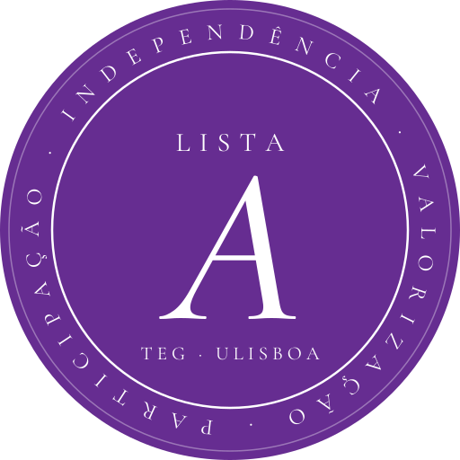
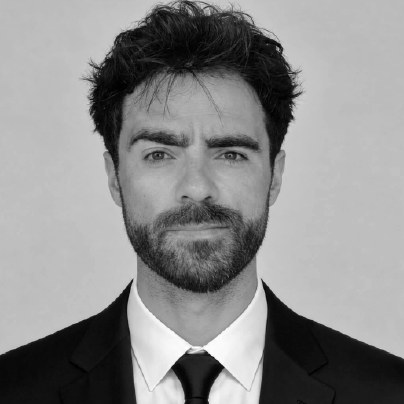
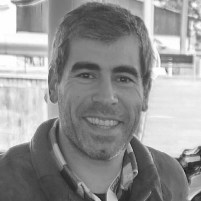
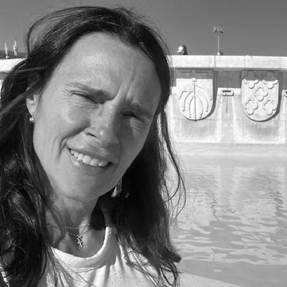

LISTA A
Assembleia Estatutária
da Universidade de Lisboa
Pessoal Técnico, Especialista e de Gestão
Independência, Valorização, Participação.
Uma Universidade que reconhece todos.
Uma Universidade que valoriza todos.
Uma Universidade que se constrói com todos.
Nota de apresentação
Uma Universidade que se constrói com todos
A Universidade de Lisboa constrói-se diariamente através do contributo de todas as pessoas que nela trabalham. A sua missão de ensino, investigação, criação cultural, inovação e serviço à sociedade depende não apenas da atividade dos docentes e investigadores, mas também do trabalho qualificado, especializado e indispensável do Pessoal Técnico, Especialista e de Gestão (TEG).
Nas Escolas, nos Serviços Centrais e nos Serviços de Ação Social, os trabalhadores TEG asseguram funções essenciais ao funcionamento da Universidade, à qualidade dos seus serviços e à concretização dos seus objetivos. São profissionais com competências, experiência e conhecimento institucional que devem ser reconhecidos e valorizados.
A Lista A apresenta-se à Assembleia Estatutária da Universidade de Lisboa com uma posição independente, autónoma e construtiva. Independente, porque não se subordina a alinhamentos ou a interesses alheios à defesa dos trabalhadores que representa. Construtiva, porque acredita no diálogo, na participação e na procura de soluções que reforcem a Universidade no seu conjunto.
A revisão dos Estatutos constitui uma oportunidade para afirmar uma Universidade mais coesa, participada e justa, na qual os TEG tenham reconhecimento institucional e uma participação efetiva na construção do futuro coletivo.
Não nos apresentamos para defender privilégios. Apresentamo-nos para defender o reconhecimento, a dignidade profissional, a igualdade de oportunidades e a participação.
Propostas concretas para os novos Estatutos
Do papel para os Estatutos
Para que os princípios enunciados não fiquem no plano das intenções, a Lista A apresentará e defenderá, na Assembleia Estatutária, as seguintes propostas.
-
Representação garantida nos órgãos de governo
Previsão expressa de, pelo menos, 3 representantes dos TEG, eleitos pelos seus pares, no Conselho Geral, no Senado e em cada Conselho de Escola, com mandato de duração idêntica à dos restantes membros eleitos.
-
Audição prévia obrigatória
Audição obrigatória dos representantes dos TEG, com o prazo mínimo de 15 dias úteis, antes da aprovação de regulamentos ou de decisões de reorganização de serviços que afetem estes trabalhadores.
-
Conselho Consultivo dos TEG
Criação de um órgão consultivo ao nível da Universidade, com representantes de todas as Escolas, dos Serviços Centrais e dos Serviços de Ação Social, que reúna, pelo menos, duas vezes por ano e possa emitir pareceres e recomendações dirigidos aos órgãos de governo.
-
Direito à informação
Envio da documentação de suporte às reuniões dos órgãos de governo a todos os seus membros, com a antecedência mínima de cinco dias úteis.
-
Publicidade das deliberações
Publicação, no sítio institucional da Universidade, das deliberações dos órgãos de governo, no prazo máximo de 30 dias após a sua aprovação.
-
Princípios comuns entre unidades
Consagração de princípios gerais, definidos ao nível da Universidade, que os estatutos e regulamentos das Escolas devem observar quanto à participação e à valorização dos TEG.
No final dos trabalhos da Assembleia Estatutária, a Lista A tornará público um relatório da sua atividade, com as propostas apresentadas, as posições assumidas e os resultados obtidos.
Candidatos
Quem somos
Seis trabalhadores TEG da Universidade de Lisboa — três efetivos e três suplentes — sem alinhamentos prévios.
Efetivos
-
Ângela Espinha
1.ª candidata
Ângela Marina Ramos Espinha
-

André Fonseca
2.º candidato
André Alberto Pinto Fonseca
-

Pedro Henriques
3.º candidato
Pedro Miguel Marcelino Henriques
Suplentes
-
Filipe Correia Morais
1.º suplente
-
Cristina Bastos
2.ª suplente
Ana Cristina Ferreira de Bastos
-

Dora Guerreiro
3.ª suplente
Dora Cristina Estevens Guerreiro
Mandatária
Os princípios que nos orientam
Seis princípios
Independência
Autonomia de pensamento, de decisão e de intervenção, sem condicionamentos nem alinhamentos prévios.
Representatividade
Compromisso de dar voz às preocupações e às propostas dos TEG de toda a Universidade.
Valorização
Reconhecimento da importância do trabalho, das competências, da experiência e da responsabilidade profissional.
Igualdade
Defesa da igualdade de oportunidades e de critérios de equidade, no respeito pela diversidade de funções e de contextos.
Participação
Promoção de uma cultura institucional em que os trabalhadores sejam ouvidos e envolvidos nas decisões que afetam a Universidade.
Responsabilidade
Intervenção fundamentada, transparente e orientada para resultados, com disponibilidade para o diálogo e para a construção de consensos.
A nossa visão
Para a Universidade de Lisboa
Defendemos uma Universidade de Lisboa que reconheça a diversidade das suas pessoas, unidades e realidades organizacionais, mas que seja capaz de afirmar uma identidade institucional comum.
Uma Universidade moderna e coesa deve valorizar todos os contributos que tornam possível o cumprimento da sua missão. Os TEG não podem ser vistos apenas como estrutura de apoio ou de execução: são parte integrante da comunidade universitária e participam, através do seu trabalho e conhecimento, na concretização dos objetivos estratégicos da instituição.
- Mais reconhecedora, que valorize o papel, as competências e a experiência dos TEG.
- Mais participada, que assegure condições reais de intervenção e de representação.
- Mais justa, que promova a igualdade de tratamento e de oportunidades.
- Mais coesa, que respeite as especificidades das suas unidades sem aprofundar desigualdades.
- Mais preparada para o futuro, que envolva os seus profissionais na modernização e na transformação institucional.
Acreditamos que uma Universidade mais forte se constrói com todos, e não apenas em nome de todos.
Programa
Os cinco eixos da nossa proposta
1Reconhecimento e valorização dos TEG
Os TEG são parte essencial da identidade e da missão da Universidade de Lisboa. O seu contributo deve ser reconhecido de forma clara, consistente e transversal. Defendemos:
- O reconhecimento expresso dos TEG enquanto parte integrante da comunidade universitária e da concretização da missão da ULisboa.
- A valorização da diversidade de qualificações, competências, especializações, responsabilidades e funções.
- Uma cultura institucional que reconheça o mérito, a experiência e o conhecimento acumulado pelos trabalhadores.
- A participação dos TEG nos processos de reflexão e de melhoria dos serviços e das estruturas organizativas.
- Maior visibilidade do contributo destes profissionais para o ensino, a investigação, a inovação e a prestação de serviços.
- O respeito pela dignidade e pela importância de todas as funções, independentemente da unidade orgânica ou do contexto em que são exercidas.
A valorização dos TEG não deve ser uma declaração de circunstância. Deve traduzir-se numa realidade institucional.
2Participação e representatividade na governação
Uma Universidade verdadeiramente participada deve criar condições para que os seus diferentes corpos sejam ouvidos e possam contribuir para as decisões institucionais. Defendemos:
- O reforço da participação dos TEG nos órgãos de governo, nos termos legalmente aplicáveis.
- Mecanismos regulares de auscultação sobre matérias estruturantes para a Universidade e para os seus trabalhadores.
- Canais de comunicação entre os representantes eleitos e os trabalhadores TEG.
- Condições para que as diferentes Escolas, os Serviços Centrais e os Serviços de Ação Social possam fazer chegar as suas preocupações e propostas.
- A disponibilização atempada da informação e da documentação relevantes para uma participação esclarecida.
- Uma representação ativa, responsável e transparente, que mantenha os trabalhadores informados sobre as posições assumidas e o trabalho desenvolvido.
Representar não é apenas ocupar um lugar. É ouvir, intervir, propor e prestar contas.
3Igualdade, equilíbrio e coesão institucional
A Universidade de Lisboa integra realidades distintas, com histórias, dimensões, estruturas e práticas próprias. Essa diversidade deve ser respeitada, mas não pode servir de justificação a desigualdades sem fundamento no reconhecimento, na participação ou nas oportunidades profissionais. Defendemos:
- A promoção de princípios comuns de equidade e de valorização profissional em toda a Universidade.
- A partilha de boas práticas entre as Escolas, os Serviços Centrais e os Serviços de Ação Social.
- Uma maior articulação institucional, no respeito pelas competências e pela autonomia das diferentes unidades.
- A identificação de assimetrias nas condições de participação e nas oportunidades de desenvolvimento profissional.
- A cooperação entre serviços e unidades, promovendo a circulação do conhecimento e a utilização eficiente dos recursos.
- O reforço de uma identidade institucional comum, assente no respeito pela diversidade e na valorização de todos.
A diversidade da Universidade deve ser uma força de coesão, e não uma razão para desigualdades.
4Desenvolvimento profissional, qualificação e valorização das carreiras
A qualidade dos serviços da Universidade depende também da capacidade de reconhecer, desenvolver e aproveitar as competências dos seus profissionais. Defendemos:
- O acesso a oportunidades de formação contínua e de atualização de competências.
- A valorização da experiência profissional, da especialização e das qualificações adquiridas.
- A criação de condições para a partilha de conhecimento e de experiência entre profissionais e unidades.
- A promoção de oportunidades de mobilidade interna voluntária, quando adequadas às necessidades dos serviços e às expectativas dos trabalhadores.
- A defesa de políticas de valorização profissional e das carreiras, no quadro dos regimes legais aplicáveis.
- O envolvimento dos trabalhadores na identificação das necessidades de formação e das prioridades de desenvolvimento profissional.
- O reconhecimento das competências técnicas e especializadas na organização e na distribuição do trabalho.
Investir nas pessoas é investir na capacidade, na qualidade e no futuro da Universidade.
5Modernização, inovação e organização dos serviços
A transformação da Universidade exige serviços eficientes, articulados e preparados para responder a novas necessidades. Os TEG devem ser reconhecidos como participantes ativos nesse processo. Defendemos:
- A simplificação de procedimentos e a redução da burocracia desnecessária.
- A transformação digital e a utilização responsável das novas tecnologias.
- O envolvimento dos trabalhadores na identificação de necessidades e de oportunidades de modernização.
- Uma maior interoperabilidade e articulação dos sistemas de informação.
- A partilha de soluções tecnológicas, de conhecimento e de boas práticas entre unidades.
- A melhoria contínua da qualidade, da eficiência e da acessibilidade dos serviços.
- Uma gestão sustentável e responsável dos recursos humanos, materiais e tecnológicos.
Não há modernização sustentável sem envolver quem conhece e assegura diariamente o funcionamento dos serviços.
Novos Estatutos
O que queremos ver refletido nos novos Estatutos
A Assembleia Estatutária tem uma responsabilidade central na definição dos princípios, da organização e dos mecanismos de governação da Universidade. É nesse âmbito que a Lista A pretende intervir.
- Reconheçam expressamente os TEG como parte integrante da comunidade universitária e como elemento essencial à concretização da missão da Universidade de Lisboa.
- Consagrem princípios de participação e de auscultação, criando condições para que os trabalhadores possam contribuir para a reflexão e para as decisões institucionais.
- Assegurem a representação dos TEG nos órgãos estatutários, nos termos previstos na lei e no modelo de governação definido.
- Reforcem a transparência institucional, promovendo o acesso à informação e a divulgação das decisões, nos termos legalmente aplicáveis.
- Favoreçam a articulação e a cooperação entre as Escolas, os Serviços Centrais e os Serviços de Ação Social, no respeito pelas respetivas competências.
- Reconheçam a experiência e o conhecimento profissional dos TEG como contributos relevantes para a modernização e para o desenvolvimento institucional.
Os Estatutos devem estabelecer princípios, competências e mecanismos de governação. A regulamentação específica das carreiras, das condições de trabalho e de outras matérias laborais deverá ser tratada nos instrumentos e nos espaços próprios, sem perder de vista a defesa dos direitos e a valorização profissional dos trabalhadores.
Os nossos compromissos
Mais do que a escolha de nomes
A eleição para a Assembleia Estatutária não pode representar apenas a escolha de nomes. Deve significar a confiança numa forma de representar e de intervir. Por isso, os candidatos da Lista A assumem os seguintes compromissos:
- Representar com independência, colocando a defesa dos TEG no centro da sua atuação.
- Ouvir os trabalhadores, procurando conhecer as diferentes realidades e preocupações de toda a Universidade.
- Intervir ativamente, apresentando propostas e contribuindo de forma fundamentada para a elaboração dos novos Estatutos.
- Defender a valorização profissional, o reconhecimento institucional e a participação dos TEG.
- Comunicar com transparência, dando conhecimento das posições assumidas e da evolução dos trabalhos.
- Promover o diálogo e o consenso, sem abdicar dos princípios e dos objetivos que fundamentam esta candidatura.
- Prestar contas, assumindo a responsabilidade inerente à confiança que lhes for atribuída.
A nossa representação não termina no momento da eleição. Começa aí.
Não procuramos privilégios. Exigimos reconhecimento.
Não defendemos uma participação simbólica. Defendemos uma participação efetiva.
Não queremos uma Universidade dividida entre quem decide e quem executa. Queremos uma Universidade que escuta, reconhece e valoriza todos os que a constroem diariamente.
Eleição para a Assembleia Estatutária
Como votar
Quando
24 de novembro (terça-feira), das 10h00 às 19h00.
25 de novembro (quarta-feira), das 9h00 às 18h00.
Onde
O voto é presencial, na mesa de voto definida pela Comissão Eleitoral. Não há voto por correspondência nem por procuração.
Quem vota
O Pessoal Técnico, Especialista e de Gestão em exercício efetivo de funções na Universidade de Lisboa à data da convocação (23 de setembro de 2026).
Os TEG elegem 3 dos 21 membros da Assembleia Estatutária, por listas, segundo o método de Hondt.
Contacto
Fale connosco
Dúvidas, preocupações ou propostas sobre a sua unidade? Escreva-nos. Representar é, antes de mais, ouvir.